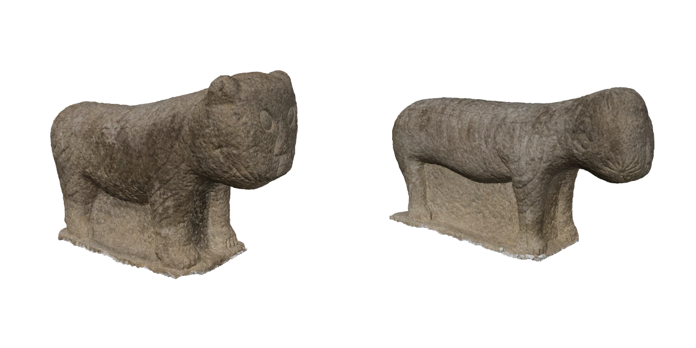

Index · 03
기능 설정
사용 도구 · Figma

-
#01
전체 비교
두 석사자를 나란히 배치해 전체 형태와 비례를 비교합니다. Index에서는 각 모델을 회전하고 확대할 수 있습니다.

수사자암사자 -
#02
부위별 확대
관찰 항목을 선택하면 두 석사자의 같은 부위를 나란히 보여줍니다.

수사자암사자 갈기 · 정수리와 목 뒤
-
#03
표면색 전환
아이콘을 눌러 표면색, 조각의 굴곡, 노멀 맵을 차례로 살펴봅니다.

수사자암사자 -
#04
정보창
각 사자의 정보 버튼을 누르면 치수와 측정 기록을 확인할 수 있습니다.
수사자 정보
- 높이
- 71.7 cm
- 몸 길이
- 104.6 cm
- 얼굴 길이
- 36.8 cm
- 얼굴 넓이
- 37.6 cm
암사자 정보
- 높이
- 61.4 cm
- 몸 길이
- 120.1 cm
- 얼굴 길이
- 34.1 cm
- 얼굴 넓이
- 34.5 cm
소장 · 공주대학교 박물관 / 측정 기록 · 사자성어 팀